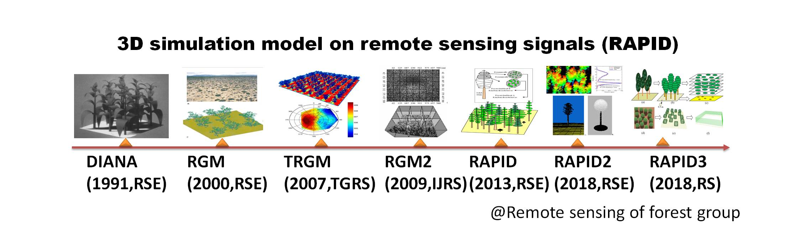

(1) Model development history:
RAPID is a radiosity-based model using computer graphics methods to compute RT within and above 3D vegetated scenes from visible/near infrared (VNIR) to thermal infrared (TIR), and microwave (MV) parts of the electromagnetic spectrum (Huang 2016; Huang et al. 2013). Figure 1 shows the history of the model development.
The DIANA model (Goel et al. 1991) is the oldest predecessor, which generated realistic maize canopies and simulated the RT using computer graphics and radiosity theories. The principal radiosity equation is as follows:
, (1)
Where
, (2)
Bi is the radiosity on surface element i, defined as the total radiation flux density leaving that surface (unit is Wm-2). Ei is the surface emission, and χi is the surface reflection or transmission coefficient which depends on the relative orientation (normal vector ) of surface i and j to each other. The Fij is the form factor or “view factor” which specifies the fraction of radiant flux leaving another surface j that reaches the surface i, and N is the number of discrete two-sided surface elements to be considered.

Figure 1. The development history of radiosity-graphics-combined models
By extending DIANA to hyperspectral regions with field of view functions, the radiosity-graphics-based model (RGM) was developed to simulate RT in semi-desert vegetation scenes (Qin and Gerstl 2000). By including thermal emission in Ei, the thermal version RGM (TRGM) was developed to simulate directional brightness temperature (DBT) over crop canopies (Liu et al. 2007; Huang et al. 2011). Recently, we embedded energy budget into TRGM, which does not rely on outside component temperature inputs (Bian et al. 2017).
To overcome the polygon number limitation (~50,0000 in 32 bit operation system), RGM was extended to large-scale forest canopies using sub-scene division method (Huang et al. 2009). This version has been verified in the context of the fourth RAdiation transfer Model Intercomparison (RAMI-IV) (marked as RGM2). To save time, parallel computation of sub-scenes was implemented using a few personal computers (PC). However, one sub-scene failure due to unexpected bugs would lead to the failure to merge the whole scene, which is still not ideal for users.
In 2013, we invented RAPID for large-scale forest scenes, which is greatly easier to use and faster than RGM2. RAPID is capable of simulating the Bidirectional Reflectance Factor (BRF) over various kinds of vegetated scenes (homogeneous or heterogeneous). Unlike thousands of polygons used in RGM2, RAPID uses dozens of porous objects to represent a mass of grassland or cropland or tree crowns. This allows for improved computation efficiency without loss of accuracy.
In 2016, RAPID2 (Huang 2016) was released including new functions of atmospheric RT by linking the Vector LInearized Discrete Ordinate Radiative Transfer (V-LIDORT) model (Huang et al. 2017), DBT simulation in TIR by updating TRGM code (Huang et al. 2015) and backscattering simulation in MV (Huang 2018), as well as lidar point cloud and waveform simulations (Huang and Wynne 2013). RAPID2 has been used to support comparing LAI inversion algorithms (Cao et al. 2015), validating a new kernel-based BRDF model (Dong et al. 2018), validating an analytic vegetation-soil-road-mixed DBT model (Cao et al. 2014), and simulating continuous remote sensing images (Huang and Lian 2015). Figure 2 shows the easy-to-use Graphical User Interface (GUI) of RAPID2. Users can freely define 3D objects (tree specie, crop type, building and water body) and place them on the target regions. A parameter editor is integrated in the GUI to modify the key parameters like height, width, orientation, radius, and so on. The generated 3D scenes and output radiosity values can also be rendered as grey or colour images in arbitrary view directions in the GUI. Two simulated large-scale images (0.6 km and 1 km) using sub-division strategy are shown in Figure 3. The 1-km scene consists of 90% mixed birch and larch forests and 10% of roads, river, and buildings; while the 600-m scene includes both clear-cutting strips and birch forests. More details can be found in (Huang and Lian 2015). Although these images demonstrated the capacity of RAPID2 to simulate km-scale images, it requires a few hours to run on a server with 12 CPU cores, which may restrict RAPID2 to limited user groups. Thus, the faster version RAPID3 is developed in this paper to specifically simulate km-scale scenes.
Figure 2. The easy-to-use Graphical User Interface of RAPID2
(a) 1 km RAPID2 image |
(b) 1 km CCD image (RGB) |
|
|
(c) 0.6 km RAPID2 image |
(d) 0.6 km Landsat 8 image |
Figure 3. Comparisons of simulated and real images of two forest scenes: (a) RAPID2 image with a resolution of 0.5 m (R:NIR, G:Red, B:Green); (b) real CCD RGB image of (a); (c) RAPID2 image with a resolution of 15 m (R:NIR, G:Red, B:Green); (d) real Landsat 8 image of (c) in May 24, 2014.
Bian Z, Du Y, Li H, Cao B, Huang H, Xiao Q, Liu Q (2017) Modeling the Temporal Variability of Thermal Emissions From Row-Planted Scenes Using a Radiosity and Energy Budget Method. Ieee Transactions on Geoscience And Remote Sensing 55 (10):6010-6026. doi:10.1109/tgrs.2017.2719098
Cao B, Du Y, Li J, Li H, Li L, Zhang Y, Zou J, Liu Q (2015) Comparison of Five Slope Correction Methods for Leaf Area Index Estimation From Hemispherical Photography. IEEE Geoscience & Remote Sensing Letters 12 (9):1958-1962
Cao B, Liu Q, Du Y, Li H, Wang H, Xiao Q (2014) Modeling Directional Brightness Temperature Over Mixed Scenes of Continuous Crop and Road: A Case Study of the Heihe River Basin. IEEE Geoscience & Remote Sensing Letters 12 (2):234-238
Dong Y, Jiao Z, Ding A, Zhang H, Zhang X, Li Y, He D, Yin S, Cui L (2018) A modified version of the kernel-driven model for correcting the diffuse light of ground multi-angular measurements. Remote Sensing of Environment 210:325-344. doi:https://doi.org/10.1016/j.rse.2018.03.030
Goel NS, Rozehnal I, Thompson RL (1991) A computer graphics based model for scattering from objects of arbitrary shapes in the optical region. Remote Sensing of Environment 36 (2):73-104
Huang H RAPID2: A 3D Simulator supporting virtual remote sensing experiments. In: Geoscience and Remote Sensing Symposium, 2016. pp 3636-3639
Huang H (2017) A unified radiosity model for optical and microwave regions. Paper presented at the Juhan Ross Legacy Symposium, Tartu, Estonia, Aug 24-25 2017
Huang H, Chen M, Liu Q, Liu Q, Zhang Y, Zhao L, Qin W (2009) A realistic structure model for large-scale surface leaving radiance simulation of forest canopy and accuracy assessment. International Journal Of Remote Sensing 30 (20):5421-5439. doi:10.1080/01431160903130911
Huang H, Liu Q, Qin W, Du Y, Li X (2011) Temporal patterns of thermal emission directionality of crop canopies. Journal of Geophysical Research-Atmospheres 116 (18):161-165
Huang H, Qin W, Liu Q (2013) RAPID: A Radiosity Applicable to Porous IndiviDual Objects for directional reflectance over complex vegetated scenes. Remote Sensing Of Environment 132:221-237. doi:10.1016/j.rse.2013.01.013
Huang H, Qin W, Spurr RJD, Liu Q (2017) Evaluation of Atmospheric Effects on Land-Surface Directional Reflectance With the Coupled RAPID and VLIDORT Models. Ieee Geoscience And Remote Sensing Letters 14 (6):916-920. doi:10.1109/lgrs.2017.2687702
Huang H, Wynne RH (2013) Simulation of lidar waveforms with a time-dependent radiosity algorithm. Canadian Journal Of Remote Sensing 39:S126-S138. doi:10.5589/m13-035
Huang H, Xie W, Sun H Simulating 3D urban surface temperature distribution using ENVI-MET model: Case study on a forest park. In: IEEE Geoscience and Remote Sensing Symposium, Milan, Italy, 12 November 2015 2015. IEEE, pp 372-377. doi:10.1109/IGARSS.2015.7326100
Huang HG, Lian J (2015) A 3D approach to reconstruct continuous optical images using lidar and MODIS. Forest Ecosystems(森林生态系统(英文)) 2 (3):20
Liu Q, Huang H, Qin W, Fu K, Li X (2007) An Extended 3-D Radiosity–Graphics Combined Model for Studying Thermal-Emission Directionality of Crop Canopy. IEEE Transactions on Geoscience & Remote Sensing 45 (9):2900-2918
Qin W, Gerstl SAW (2000) 3-D Scene Modeling of Semidesert Vegetation Cover and its Radiation Regime. Remote Sensing of Environment 74 (1):145-162
With our continuous improvement and expansion, RAPID has become the first full-band multi-sensor free simulation platform (Huang et al., 2018) supporting optical, thermal infrared, lidar and microwave backscatter using the same 3D scene. It also has strong flexibility in scale, which can be used for fine small scenes, as well as for plot scales and landscape scales, all with good simulation efficiency. The latest version is currently RAPID3.
(2) Model main modules:
The kernel of RAPID is a set of Fortran-based, DOS programs mixed with C language, but the interface is compiled with Visual studio MFC, which is convenient for users. The main function of the software interface is to load input files and perform user-set scene simulation or visual viewing effects. Taking thermal infrared band simulation as an example, the model mainly consists of four main parts: a) canopy real structure generation module; b) single scattering module; c) multiple scattering module; d) direction brightness temperature module.
RAPID Input file Input files are not integrated into a large configuration file. Instead, it is divided into several separate files to define different information. The main input files include: POLY.IN, REF.IN, OPTICS.IN, VIEWBIDIR.DAT and TC.IN
POLY.IN(Three-dimensional structure file) : POLY.IN is one of the important files for RAPID operation. It stores a lot of coordinates and color information for triangles and rectangles. Each triangle or rectangle represents vegetation, soil, or other objects. The specific information described in the file includes: the long width of the scene, the number of polygons stored, the properties of each polygon panel (number of vertices, red light reflection transmittance, green light reflection transmittance, blue light reflection transmittance, leaf area index, Whether needles, polygon radius, polygon thickness, blade size, (x, y, z) coordinates of each vertex of the polygon).
REF.IN(Sun and sky light files) : This document records the position of the sun and the incident light information in different directions of the sky.
OPTICS.IN(Component spectrum file) : Recorded reflectance and transmittance of all components in the POLY.IN file.
TC.IN(Component temperature file) : This file stores leaf and soil temperatures in different layers. These temperatures can be manually assigned and obtained in this study by coupling with the ENVI-met model. For each component, the light and shadow surface temperatures are also distinguished.
VIEWBIDIR.DAT(Sensor file) : Define the sensor's field of view (FOV), observation height, and soil BRDF options. The observed altitude is 0, indicating satellite; otherwise it is ground or aerial observation. It is based on a common satellite sensor or tower-based lens and integrates typical spectral data. Including visible light (RGB) and near-infrared bands of GeoEye/QuickBird/SPOT satellites, 8 bands of Worldview-2 satellites, 18 bands of CHRISW satellites, visible light (RGB), near-infrared and thermal infrared bands of Landsat-8 satellites. In addition, users can customize the spectrum file.
RAPID Output files: The simulation results include several temporary output files and final files. Temporary files are shared between modules, and we focus on the final file, which includes the radiance files after the solution (RADFLUX.DAT, SELFFLUX.DAT, etc.), BRF (BRF *.DAT) and DBT (DRT *.DAT). The RADFLUX.DAT file is used to store the final radiance value after multiple scattering. There are three other formats, but the radiance values for the different results are SCATTERFLUX.DAT (multiple scattering contribution), SELFFLUX.DAT (single scattering value), and SPECULARFLUX.DAT (mirror scattering value): The BRF MULTI.DAT file stores the final BRF data for all bands and all directions. Similarly, BRF_SINGLE.DAT stores single-scatter BRF values for all bands and in all directions. The DRT_MULTI.DAT file stores the brightness temperature values of the thermal infrared bands in all directions.
The main interface of the model is an interactive editing mode for large scenes. Open the software Use the menu tool to create a new scene or open an old scene. The scene size, slope and elevation range are customized by the user. Select the land cover type on the right side of the modeling interface, including vegetation (ellipsoidal canopy, cone canopy or crop), road, bare land, building and water body. You can customize the properties of various features, directly after selecting the type icon. Scene rendering is performed on the left side of the interface. After the scene is established, it is transferred to the model running part, and the software generates a three-dimensional structure view of the scene. Then input the analog control parameters, the latitude and longitude of the scene, the simulation time, the sensor type, the sensor height, the FOV, etc., and the relevant files are automatically generated by the model after input. After the parameters are set, enter the analog control interface and select the relevant analog type, such as resolution size, molecular scene, thermal radiation simulation, BRF, single scattering, lidar and satellite imagery. After the simulation is completed, the BRF curve of each band can be viewed by the BRF View interface that comes with the model. The resulting high resolution image can be opened with the remote sensing image processing software ENVI.

Basic concept of solid soil polygons, stem polyongs and porous crowns.

Library of tree species (broadleaf, needle-leaf, bamboo, grass etc.)

Huailai Site

RAMI pine forest

RAMI pine forest looking up

RAMI rotation forest

Virtual fractal forest

First, Create the Huailai 3D scene and solve light transfer.

Second, simulate optical image.

Third, simulate thermal image.


Fourth, simulate lidar point cloud and waveform.

Fifth, simulate fisheye image.
Last, simulate microwave backscattering image (not done yet).
【1】Click View->3D Viewer (D) (or the toolbutton ) to launch RGMDisp.exe .
【2】In RGMDisp.exe, click the menu project->open scene (or the toolbutton open) to open the file D:\RAPID\test1\poly.in.
【3】Drap mouse to rotate the scene; zoom the scene using up/down arrow keys; switch the render type (wire or fill mode); check if the scene is what you really need.
【1】Clike menu prepare-> STEP 3 (or toobar with icon 3): A Dialog (Input parameters) will show, which has two frames: Create raw files and Refine files. Create raw files is to generate major input files. Refine files provides change to change those input files.

【2】click the Create raw files-->Apply button to create default input files, which simulates the RGB+NIR mode (four bands reflectance). Then, click Close to exit
【1】Click menu Run-> Go-64bit (or toolbar icon 64bit): Shows the dialog for 64 bit OS Run RAPID. Left panel is for running options; right panel is for displaying the running processes. By checking on the options in the dialog, different modules will be invoked. The defualt task is to simulate BRF and DBT. Checking on liar to simulate large footprint lidar waveform; checking on TIR to simulate thermal brightness temperature; checking on imaging will simulate images; checking on Fisheye to simulate fish eye images.

【2】Click RUN button to run the model; STOP button to stop current running; EXIT to quit current dialog. heck on the option (Show processing) to see more detailed running log data.
【1】Simulated results are stored in the working folder(D:\RAPID\test1) . Major files are brf*.dat, where brf_multi.dat(or earlier brf.dat) are total BRF; brf01.dat is for soil component; brf02.dat is for leaf component; brf03.dat is for trunk component BRF; the corresponding fari*.dat files are the component viewing fractions; the corresponding refl*.dat files are component equivenent reflectance values. The radflux.dat stores the radiosity with multiple scattering; selfflux.dat for single scattering.
【2】The most direct way: Notepad or UltraEdit can be used to open these dat files and view outputs. Then, copy them to Excel and draw BRF curves.
【3】The visual way to see outputs is to render by RGMDisp.exe. Click menu View->3D Viewer (D) (or toolbar button ), invoke the 3D renderer RGMDisp.exe. Then, open the poly.in in the working folder. Click menu Display, select different draw functions (e.g. draw single scattering to show selfflux.dat) to see the effects.

2.1 major steps:
Two models, RAPID and VLIDORT, are required for coupling. The compiled VLIDORT is the vlidort.exe file. There are five steps:
【1】Configure four key files for VLIDORT model: 2p7_VLIDORT_ReadInput.cfg, VBRDF_LutInput.cfg, input_atmos.dat and input_temp23.dat. Default files are included in the softare, which is good for test.
【2】In the Input dialog (Input parameters), select the atmosphere model as vlidort, assign a AOD (e.g. 0.2); click Apply button to call vlidort.exe to generate five groups of viewbidir.dat files (BRDF view angles) and aerosol.in. The five groups of angular files are:
[2.1] VIEWBIDIR_DBKERNEL_1 to 15: angles from -70 to 70 deg with a step of 10 deg for direct ligh in the solar principal plane. DBOUNCE_BRDFUNC(s, a, b): incident solar angle s, reflected line-of-sight angle a, and relative azimuth b.
[2.2] VIEWBIDIR_USER_BRDFUNC_0_1: user defined angles, which is the USER_BRDF_F_0 (s, a): incident solar angle s and reflected view zenith angle a.
[2.3] VIEWBIDIR_BRDFUNC_0_1 to 0_4: 200 segmented angles to describe the hemisphere. BRDF_F_0(s, k): incident solar angle s and reflected discrete ordinate k.
[2.4]VIEWBIDIR_BRDFUNC_1 to 10: 200 angles. BRDF_F_0(s, k): incident solar angle s and reflected discrete ordinate k.
[2.5]VIEWBIDIR_USER_BRDFUNC_1 to 10: USER_BRDF_F_0 (s, a): incident solar angle s and reflected view zenith angle a.
In aerosol.in, there is only one line, including two numbers: aerosol type and AOD.
If using command line: vlidort.exe pre
【3】According to the data requirement from 【2】, a batch file should be created to run RAPID and produce the BRDF results for the angles from 2.1 to 2.5. For example, when solar zenith angle (SZA) is 20 deg, the batch file looks like:
ref64 inf -size 1024
mer64
ref64 inf -size 1024 spec -sza 20.00
sol64 -sza 20.00
ref64 inf -size 1024 bidir -sza 20.00 -file VIEWBIDIR_DBKERNEL_1.dat
ref64 inf -size 1024 spec -sza 15
sol64 -sza 15
ref64 inf -size 1024 bidir -sza 15 -file VIEWBIDIR_USER_BRDFUNC_0_1.dat
ref64 inf -size 1024 spec -sza 20.00
sol64 -sza 20.00
ref64 inf -size 1024 bidir -sza 20.00 -file VIEWBIDIR_DBKERNEL_2.dat
ref64 inf -size 1024 spec -sza 17
sol64 -sza 17
ref64 inf -size 1024 bidir -sza 17 -file VIEWBIDIR_USER_BRDFUNC_0_2.dat
ref64 inf -size 1024 spec -sza 20.00
sol64 -sza 20.00
ref64 inf -size 1024 bidir -sza 20.00 -file VIEWBIDIR_DBKERNEL_3.dat
ref64 inf -size 1024 spec -sza 19
sol64 -sza 19
ref64 inf -size 1024 bidir -sza 19 -file VIEWBIDIR_USER_BRDFUNC_0_3.dat
ref64 inf -size 1024 spec -sza 20.00
sol64 -sza 20.00
ref64 inf -size 1024 bidir -sza 20.00 -file VIEWBIDIR_DBKERNEL_4.dat
ref64 inf -size 1024 spec -sza 20
sol64 -sza 20
ref64 inf -size 1024 bidir -sza 20 -file VIEWBIDIR_USER_BRDFUNC_0_4.dat
ref64 inf -size 1024 spec -sza 20.00
sol64 -sza 20.00
ref64 inf -size 1024 bidir -sza 20.00 -file VIEWBIDIR_DBKERNEL_5.dat
ref64 inf -size 1024 spec -sza 21
sol64 -sza 21
ref64 inf -size 1024 bidir -sza 21 -file VIEWBIDIR_USER_BRDFUNC_0_5.dat
ref64 inf -size 1024 spec -sza 20.00
sol64 -sza 20.00
ref64 inf -size 1024 bidir -sza 20.00 -file VIEWBIDIR_DBKERNEL_6.dat
ref64 inf -size 1024 spec -sza 23
sol64 -sza 23
ref64 inf -size 1024 bidir -sza 23 -file VIEWBIDIR_USER_BRDFUNC_0_6.dat
ref64 inf -size 1024 spec -sza 20.00
sol64 -sza 20.00
ref64 inf -size 1024 bidir -sza 20.00 -file VIEWBIDIR_DBKERNEL_7.dat
ref64 inf -size 1024 spec -sza 25
sol64 -sza 25
ref64 inf -size 1024 bidir -sza 25 -file VIEWBIDIR_USER_BRDFUNC_0_7.dat
ref64 inf -size 1024 spec -sza 20.00
sol64 -sza 20.00
ref64 inf -size 1024 bidir -sza 20.00 -file VIEWBIDIR_DBKERNEL_8.dat
ref64 inf -size 1024 spec -sza 30
sol64 -sza 30
ref64 inf -size 1024 bidir -sza 30 -file VIEWBIDIR_USER_BRDFUNC_0_8.dat
ref64 inf -size 1024 spec -sza 20.00
sol64 -sza 20.00
ref64 inf -size 1024 bidir -sza 20.00 -file VIEWBIDIR_DBKERNEL_9.dat
ref64 inf -size 1024 spec -sza 47
sol64 -sza 47
ref64 inf -size 1024 bidir -sza 47 -file VIEWBIDIR_USER_BRDFUNC_0_9.dat
ref64 inf -size 1024 spec -sza 20.00
sol64 -sza 20.00
ref64 inf -size 1024 bidir -sza 20.00 -file VIEWBIDIR_DBKERNEL_10.dat
ref64 inf -size 1024 spec -sza 49
sol64 -sza 49
ref64 inf -size 1024 bidir -sza 49 -file VIEWBIDIR_USER_BRDFUNC_0_10.dat
ref64 inf -size 1024 spec -sza 20.00
sol64 -sza 20.00
ref64 inf -size 1024 bidir -sza 20.00 -file VIEWBIDIR_DBKERNEL_11.dat
ref64 inf -size 1024 spec -sza 50
sol64 -sza 50
ref64 inf -size 1024 bidir -sza 50 -file VIEWBIDIR_USER_BRDFUNC_0_11.dat
ref64 inf -size 1024 spec -sza 20.00
sol64 -sza 20.00
ref64 inf -size 1024 bidir -sza 20.00 -file VIEWBIDIR_DBKERNEL_12.dat
ref64 inf -size 1024 spec -sza 51
sol64 -sza 51
ref64 inf -size 1024 bidir -sza 51 -file VIEWBIDIR_USER_BRDFUNC_0_12.dat
ref64 inf -size 1024 spec -sza 20.00
sol64 -sza 20.00
ref64 inf -size 1024 bidir -sza 20.00 -file VIEWBIDIR_DBKERNEL_13.dat
ref64 inf -size 1024 spec -sza 53
sol64 -sza 53
ref64 inf -size 1024 bidir -sza 53 -file VIEWBIDIR_USER_BRDFUNC_0_13.dat
ref64 inf -size 1024 spec -sza 20.00
sol64 -sza 20.00
ref64 inf -size 1024 bidir -sza 20.00 -file VIEWBIDIR_DBKERNEL_14.dat
ref64 inf -size 1024 spec -sza 55
sol64 -sza 55
ref64 inf -size 1024 bidir -sza 55 -file VIEWBIDIR_USER_BRDFUNC_0_14.dat
ref64 inf -size 1024 spec -sza 20.00
sol64 -sza 20.00
ref64 inf -size 1024 bidir -sza 20.00 -file VIEWBIDIR_DBKERNEL_15.dat
ref64 inf -size 1024 spec -sza 60
sol64 -sza 60
ref64 inf -size 1024 bidir -sza 60 -file VIEWBIDIR_USER_BRDFUNC_0_15.dat
ref64 inf -size 1024 spec -sza 89.25
sol64 -sza 89.25
ref64 inf -size 1024 bidir -sza 89.25 -file VIEWBIDIR_USER_BRDFUNC_1.dat
ref64 inf -size 1024 spec -sza 86.13
sol64 -sza 86.13
ref64 inf -size 1024 bidir -sza 86.13 -file VIEWBIDIR_USER_BRDFUNC_2.dat
ref64 inf -size 1024 spec -sza 80.78
sol64 -sza 80.78
ref64 inf -size 1024 bidir -sza 80.78 -file VIEWBIDIR_USER_BRDFUNC_3.dat
ref64 inf -size 1024 spec -sza 73.54
sol64 -sza 73.54
ref64 inf -size 1024 bidir -sza 73.54 -file VIEWBIDIR_USER_BRDFUNC_4.dat
ref64 inf -size 1024 spec -sza 64.81
sol64 -sza 64.81
ref64 inf -size 1024 bidir -sza 64.81 -file VIEWBIDIR_USER_BRDFUNC_5.dat
ref64 inf -size 1024 spec -sza 54.94
sol64 -sza 54.94
ref64 inf -size 1024 bidir -sza 54.94 -file VIEWBIDIR_USER_BRDFUNC_6.dat
ref64 inf -size 1024 spec -sza 44.22
sol64 -sza 44.22
ref64 inf -size 1024 bidir -sza 44.22 -file VIEWBIDIR_USER_BRDFUNC_7.dat
ref64 inf -size 1024 spec -sza 32.89
sol64 -sza 32.89
ref64 inf -size 1024 bidir -sza 32.89 -file VIEWBIDIR_USER_BRDFUNC_8.dat
ref64 inf -size 1024 spec -sza 21.17
sol64 -sza 21.17
ref64 inf -size 1024 bidir -sza 21.17 -file VIEWBIDIR_USER_BRDFUNC_9.dat
ref64 inf -size 1024 spec -sza 9.27
sol64 -sza 9.27
ref64 inf -size 1024 bidir -sza 9.27 -file VIEWBIDIR_USER_BRDFUNC_10.dat
【4】 Once the BRDF has been generated for VLIDORT by step 3, we can run VLIDORT.exe to simulate top of atmosphere BRDF.
If the working folder is Aerosol\HOM_dense\20, we can write a batch file into a DOS file for automatic running:
copy /Y 2p7_VLIDORT_ReadInput_20.cfg Aerosol\HOM_dense\20\2p7_VLIDORT_ReadInput.cfg
copy /Y VBRDF_LutInput_20.cfg Aerosol\HOM_dense\20\VBRDF_LutInput.cfg
copy /Y hotspot20_dense.bat Aerosol\HOM_dense\20\hotspot.bat
copy /Y vlidort2.exe Aerosol\HOM_dense\20\vlidort2.exe
copy /Y aerosol11.in Aerosol\HOM_dense\20\aerosol.in
cd Aerosol\HOM_dense\20\
vlidort.exe pre
hotspot.bat
vlidort.exe
【5】View results: There are only two files for two typical bands: results_brdfplus_out1.txt (red) 和results_brdfplus_out2.txt (NIR) . The upward and downward radiances at top of atmosphere (TOA, Level 34 km) and bottom of atmosphere (BOA, Level 0 km) in different view angles (Geometry) are included. The 5th column stores the TOA radiance, which can be transfomed into BRF by normalize the inciden angle (e.g. SZA=20deg):
BRFvlidort = RT_VLIDORT(:,5)*pi/cos(20/180*pi);
The file looks like:
Level/Output, Geometry, TS_stokes (up, down), DBounce_BRDF
0.000000000000000 1 70.0000000000000 0.000000000000000 4.139698377884619E-002 0.000000000000000 3.157000000000000E-002
0.000000000000000 2 60.0000000000000 0.000000000000000 3.236583873811853E-002 0.000000000000000 4.052000000000000E-002
0.000000000000000 3 50.0000000000000 0.000000000000000 2.938779468035125E-002 0.000000000000000 5.605000000000000E-002
0.000000000000000 4 40.0000000000000 0.000000000000000 2.892962945196362E-002 0.000000000000000 6.907000000000001E-002
0.000000000000000 5 30.0000000000000 0.000000000000000 2.970106429368309E-002 0.000000000000000 8.117000000000001E-002
0.000000000000000 6 20.0000000000000 0.000000000000000 3.095597439821184E-002 0.000000000000000 9.178000000000001E-002
0.000000000000000 7 10.0000000000000 0.000000000000000 3.228235312807796E-002 0.000000000000000 0.100200000000000
0.000000000000000 8 1.00000000000000 0.000000000000000 3.250845013352362E-002 0.000000000000000 0.107700000000000
0.000000000000000 9 10.0000000000000 180.000000000000 3.478137157809898E-002 0.000000000000000 0.114800000000000
0.000000000000000 10 20.0000000000000 180.000000000000 3.652355662691645E-002 0.000000000000000 0.128200000000000
0.000000000000000 11 30.0000000000000 180.000000000000 3.433067592882250E-002 0.000000000000000 0.109600000000000
0.000000000000000 12 40.0000000000000 180.000000000000 3.293580155830215E-002 0.000000000000000 9.775000000000000E-002
0.000000000000000 13 50.0000000000000 180.000000000000 3.117189836575358E-002 0.000000000000000 7.987000000000000E-002
0.000000000000000 14 60.0000000000000 180.000000000000 3.019334846316788E-002 0.000000000000000 5.908000000000000E-002
0.000000000000000 15 70.0000000000000 180.000000000000 3.204296566668410E-002 0.000000000000000 3.900000000000000E-002
34.0000000000000 1 70.0000000000000 0.000000000000000 1.042263910995895E-002 8.451212213112594E-002 3.157000000000000E-002
34.0000000000000 2 60.0000000000000 0.000000000000000 1.313291672756625E-002 9.589280961267308E-002 4.052000000000000E-002
34.0000000000000 3 50.0000000000000 0.000000000000000 1.706070083173341E-002 0.133890480711280 5.605000000000000E-002
34.0000000000000 4 40.0000000000000 0.000000000000000 2.027413925704747E-002 0.231665487874904 6.907000000000001E-002
34.0000000000000 5 30.0000000000000 0.000000000000000 2.316170470818002E-002 0.460053153157133 8.117000000000001E-002
34.0000000000000 6 20.0000000000000 0.000000000000000 2.566862950008229E-002 0.664506778242466 9.178000000000001E-002
34.0000000000000 7 10.0000000000000 0.000000000000000 2.771875814965746E-002 0.413590827352392 0.100200000000000
34.0000000000000 8 1.00000000000000 0.000000000000000 2.785321303794205E-002 0.199184930312660 0.107700000000000
34.0000000000000 9 10.0000000000000 180.000000000000 3.104663722930473E-002 9.111591705444461E-002 0.114800000000000
34.0000000000000 10 20.0000000000000 180.000000000000 3.359126995970321E-002 5.349915463210418E-002 0.128200000000000
34.0000000000000 11 30.0000000000000 180.000000000000 2.995665372555962E-002 3.663414339175187E-002 0.109600000000000
34.0000000000000 12 40.0000000000000 180.000000000000 2.739418797213769E-002 2.877187642667495E-002 9.775000000000000E-002
34.0000000000000 13 50.0000000000000 180.000000000000 2.331175291546405E-002 2.573277965339820E-002 7.987000000000000E-002
34.0000000000000 14 60.0000000000000 180.000000000000 1.811863222828699E-002 2.626059084016453E-002 5.908000000000000E-002
34.0000000000000 15 70.0000000000000 180.000000000000 1.266681849226738E-002 3.057390157266330E-002 3.900000000000000E-002
2.2 Simulating a pure absorbing atmosphere:
Although VLIDORT has been benchmarked for Rayleigh and aerosol calculations, we present some simple calculations here for orientation purposes. First, when the atmosphere is transparent, BRFTOA equals BRFBOA. Second, for a non-scattering (pure absorption) atmosphere (transmittance Tabs=0.75), and a ground surface with reflectance ρground for sun direction Ωs and view direction Ωv. Then, the analytic single-scattering BRFTOA should be as follows:
 (5)
(5)
The following Figure shows the consistency of the BRFTOA comparison between VLIDORT and the analytic expression using Eq. (5) for a Lambertian ground surface; the absolute error is generally lower than 0.003.

Figure 2. Comparing analytic TOA reflectance (Eq. (4) with VLIDORT-derived reflectance for a Lambertian surface (albedo0.5) and for an absorbing atmosphere (transmittance = 0.75): (a) BRF, SZA = 20; (b) BRF, SZA = 50; (c) Absolute error, SZA = 20; (d) Absolute error, SZA = 50.
There are three possible ways to assign component temperature for TIR simulation:
(1) use 1D model ECUPID model to simulate crop leaf and soil temperature distribution (by layer and leaf angle). ECUPID was interated in the RAPID system.
(2) use 3D model ENVI-met to simulate landscape temperature distribution. However, ENVI-met is not integrated in RAPID.
(3) TRGM with energy budget moudule embedded, which was published but not yet inegrated in RAPID.
Anyway, whatever the way it is, what you should do is to write the temperatures int tc.in:
3 2 1.0 (three components, two layers and multiplying coefficient 1.0)
layer 1 2 (layer code)
leaf (first component, leaf)
28 28 (sunlit temperature at layer 1 and 2)
26 26 (shaded temperature at layer 1 and 2)
stem (second component, stem or trunk)
28 28 (sunlit temperature at layer 1 and 2)
24 24 (shaded temperature at layer 1 and 2)
soil (third component, soil)
37 37 (sunlit temperature at layer 1 and 2)
31 31 (shaded temperature at layer 1 and 2)
Click menu Prepare-> STEP 1 (or toolbar icon ①): In the popup dialog, browse and select a working folder (e.g. D:\RAPID\test3).
【1】 Click menu DTM->scene size. Set the scene size as length 10, width 10, cellsize 1 m, elevation 0, and slope 0. Then, Click the button OK.
【2】In the right panels, expand the treelist All components->Rectangle crowns, to create square crop canopies.
【3】Find and click the button "New", which will generate a leaf node for the class of crop canopies, named "Rectangle crowns1" , with the tree structure as All components->Rectangle crowns->Rectangle crowns1.
【4】Click this node "Rectangle crowns1", modifying the crown properties in the below editor. Specifically, change crown width (crown width) , from default 3m to 2 m; change height to 2 m. Press enter to change. Then, Click button “Update” to complete data consistency.
【5】Move the mouse to the left map area; select a position (x=2 m, y=1 m) ; click the mouse left key to plant a group of crowns (Rectangle crowns1) in the scene. The plant is shown as a green square. Then, plant additional 4 crops below to form a row ridge. Click toolar select button to select this row. Then, Click toolar button copy and then paste to replicate this row. Then, drag this row to another row. Before draging, you must click the toolbar button (like a triangle icon). Finally, click mouse right key to cancel the selection mode.
【6】Click menu“Save”or toolbar save icon, in the popup dialog, select an output path (D:\RAPID\test3\rowcrop.map), and save the scenes into a *.map file.
【7】Click menuPrepare-> STEP 2 (or toolbar icon ②): Transform the map file into poly.in file format (automatically generated in the working folder: :\RAPID\test3\poly.in), and generate default ref.in, optics.cat and optics.in files.
【1】Click menu View->3D Viewer (D) (or toolbar button ), invoke the 3D renderer RGMDisp.exe.
【2】In the GUI of RGMDisp.exe, Click menu project->open scene (or toolar button OPEN), select a file D:\RAPID\test3\poly.in.
【3】Use mouse to drag and rotate, or zoom by up/down arrow, or change the wire/fill mode, to make sure if the scene is row-crop scene.
【1】Click menu Prepare-> STEP 3 (or toolbar icon 3): Popup the dialog , you see two child windows Create raw files and Refine files, which are used to generate major input files and modify them.In the sensor type list, select VNIR+TIR/Landsat-8 (RGB+NIR+TIR) type to simulate TIR.

【2】Click Apply button in the Create raw files window, to generate default files. Then, switch to Refine files window, Click tc.in to edit component temperatures. Then, Click Close button exit.

【1】Click menu Run-> Go-64bit (or toolbar icon 64bit): Shows the dialog for 64 bit OS Run RAPID. Left panel is for running options; right panel is for displaying the running processes.You must check the option run TIR(tc.in) to simulate TIR; check option Infinite scene to simulate infinite scene.

【2】Click RUN button to run the model; STOP button to stop current running; EXIT to quit current dialog. heck on the option (Show processing) to see more detailed running log data.
【1】Simulated results are stored in the working folder(D:\RAPID\test3) . Major thermal files are drt*.dat, where drt_multi.dat(or earlier drt.dat) is the total brightness temperature and radiance.

【2】The most direct way: Notepad or UltraEdit can be used to open thse dat files and view outputs. Then, copy them to Excel and draw DBT curves.
【3】Like BRF, visualize the outputs by RGMDisp.exe. Click menu View->3D Viewer (D) (or toolbar button ), invoke the 3D renderer RGMDisp.exe. Then, open the poly.in in the working folder. Click menu Display, select different draw functions (e.g. draw single scattering to show selfflux.dat) to see the effects.
The module of lidar waveform simulation was originally used for GLAS large footprint waveform. The corresponding programm is lidar64.exe. All inputs include footprint size, incident angle, pulse widht FWHM. Recently, we improved the code to simulate small footprint. Because the incident direction and recieving direct coincides (like the hotspot direction in BRDF), we use the SZA in ref.in as the incident angle, and the simulated s0.raw file (storing the polygon ID), z0.raw (storing the z-buffer), c0.raw (storing the polygon type code) as input.
The command line to simulate:: lidar64.exe -foot 15.0 -space 70.0 -FWHM 4.0 sgl
where -foot means footprint radius (m), -space means sampling spacing between two footprints, -FWHM for pulse width, sgl means only single scattering to simulate.
If using sgl, the speed is very fast. In the dialog Run RAPID, typing the following texts:
ref64 spec -size 2000
lidar64.exe -foot 15.0 -space 70.0 -FWHM 4.0 sgl
If multiple scattering options used (not checking sgl), more calculations on view factors and multiple scattering are required:
ref64 -size 2000
mer64
ref64 spec -size 2000
sol64
lidar64.exe -foot 15.0 -space 70.0 -FWHM 4.0 sgl
【1】 Click menu DTM->scene size. Set the scene size as length 20, width 20, cellsize 1 m, elevation 0, and slope 0. Then, Click the button OK.
【2】In the right panels, expand the treelist All components->Cone+Cylinder trees, to create cone plus cylinder shaped trees.
【3】Find and click the button "New", which will generate a leaf node for the class of conifer trees, named as "Cone+Cylinder tree1" , with the tree structure as All components->Cone+Cylinder trees->Cone+Cylinder tree1.
【4】Click this node "Cone+Cylinder tree1", modifying the crown properties in the below editor. Specifically, change Height30m, Crown Length 20m, Cone Length为2m, LAI 6, Press enter to change, Then, Click button “Update” to complete data consistency.
【5】Move mouse to the left map panel, select five places and click to plant randomly 5 trees. Ecah plant is shown as a dark green circle.
【6】Click menu “Save”or toolbar save icon, in the popup dialog, select an output path (D:\RAPID\test4\lidartree.map), and save the scenes into a *.map file.
【7】Click menu Prepare-> STEP 2 (or toolbar icon ②): Transform the map file into poly.in file format (automatically generated in the working folder: :\RAPID\test4\poly.in), and generate default ref.in, optics.cat and optics files.
【1】Click menu View->3D Viewer (D) (or toolbar button ), invoke the 3D renderer RGMDisp.exe.
【2】In the GUI of RGMDisp.exe, Click menu project->open scene (or toolar button OPEN), select a file D:\RAPID\test4\poly.in.
【3】Drap mouse to rotate the scene; zoom the scene using up/down arrow keys; switch the render type (wire or fill mode); check if the scene is what you really need (cone+cylinder shape, five trees).
【1】Click menu Prepare-> STEP 3 (or toolbar icon 3): Popup the dialog , you see two child windows Create raw files and Refine files, which are used to generate major input files and modify them.In the sensor type list, select (RGB+NIR) type because we only support the last three bands at current version.
【2】Click Apply button in the Create raw files window, to generate default files. Then, switch to Refine files window, Click ref.in to edit the first line (solar zenith and azimuth angle) . Then, Click Close button to exit.

【1】Click menu Run-> Go-64bit (or toolbar icon 64bit): Shows the dialog for 64 bit OS Run RAPID. Left panel is for running options; right panel is for displaying the running processes.You must check the option run lidar. Then, modify the command line as:
ref64 spec -size 2000
lidar64.exe -foot 15.0 -FWHM 4.0 sgl
【2】Click RUN button to run the model; STOP button to stop current running; EXIT to quit current dialog. heck on the option (Show processing) to see more detailed running log data.
Simulated results are stored in the working folder(D:\RAPID\test4) . Major output files of Lidar are waveform_sgl.dat or waveform_multi.dat, which records the waveform of the scene. Notepad or UltraEdit can be used to open these *.dat files and View outputs. Then, copy them to Excel to draw curves.

There are two types of Lidar simulations: (1) lidar64.exe by set small footprint and generate discrete returns; (2) img64.exe. Here, we will test the (2) method.
img64.exe is mainly used to generate remote sensing images. The major command line parameters are:
-f -- force replace existent image files.
-inf -- force infinite replication of the scene to simulate large scale.
-infsize --how many times to replicate the scene in one direction, default 100, that is to replicate the central scene in x and y directions: left 100, right 100, up 100.
-fish -- simulate fisheye 180 deg image and results are stored in fishview.img(fishview.hdr).
-mid --just output the middle or central subscene (3 by 3), just for better merging in large scale image simulation
-reso 0.5-- set the output spatial resolution (default 0.5 m)
-look zen azim -- render the scene in a specific direction (zenith angle, azimuth angle)
-air -- simulate airborne images. Theresults are stored in airview.img(airview.hdr).
To define the sensor location (x,y,z) and orientation (zen,azim) , a separate file (Camera.in) is needed. There is only one line: x y z zen azim. When zen is between 90 and 180, sensor is point up, such as LAI observation and TLS scanning; if between 0 and 90 deg, sensor is looking down. For example,
means defining a sensor at coordinate (4,4,0.01) to look straight up.
If no option on both -fish and -air, parallel projection will be used using the view angles in viewbidir.dat. There will be a few images according to the view angles stored as refl*.img. These images can be opened by ENVI.
To simulate point cloud, option -fish or -air is needed. Results are stored in pointcloud_air.txt (ALS scanning) or pointcloud.txt (mono-station 360 deg scanning, TLS). A typical command line will be:
img64.exe -f -reso 0.5 -size 3000 air
This command generates point cloud and multiple spectral images (airview.img or fishview.img).
【1】 Click menu DTM->scene size. Set the scene size as length 20, width 20, cellsize 1 m, elevation 0, and slope 0. Then, Click the button OK.
【2】In the right panels, expand the treelist All components->Ellipse trees, to create ellipsoid tree.
【3】Find and click the button "New", which will generate a leaf node for the class of decidious tree, named as "Ellipse tree1" , with the tree structure as All components->Ellipse trees->Ellipse tree1.
【4】Click this node "Ellipse tree1", modifying the crown properties in the below editor. Specifically, change 3D tree model from 0 to 9 (e.g. T_Betula pendula) , change the Height to 10 m, Crown width to 4 m, Press enter to confirm change. Then, Click button “Update” to complete data consistency.

【5】Move mouse to the left map panel and click mouse once to plant one tree. The plant will be seen as a light green circle.
【6】Click menu “Save”or toolbar save icon, in the popup dialog, select an output path (D:\RAPID\test5\imagetest.map), and save the scenes into a *.map file.
【7】Click menu Prepare-> STEP 2 (or toolbar icon ②): Transform the map file into poly.in file format (automatically generated in the working folder: :\RAPID\test5\poly.in), and generate default ref.in, optics.cat and optics files.
【1】Click menu View->3D Viewer (D) (or toolbar button ), invoke the 3D renderer RGMDisp.exe.
【2】In the GUI of RGMDisp.exe, Click menu project->open scene (or toolar button OPEN), select a file D:\RAPID\test5\poly.in.
【3】Drap mouse to rotate the scene; zoom the scene using up/down arrow keys; switch the render type (wire or fill mode); check if the scene is realistic tree.

【1】Click menu Prepare-> STEP 3 (or toolbar icon 3): Popup the dialog , you see two child windows Create raw files and Refine files, which are used to generate major input files and modify them.In the sensor type list, select (RGB+NIR) .
【2】Click Apply button in the Create raw files window, to generate default files. Then, switch to Refine files window, Click camera.in to edit the two angles (zenith and azimuth angles). Then, Click Close button to exit.

【1】Click menu Run-> Go-64bit (or toolbar icon 64bit): Shows the dialog for 64 bit OS Run RAPID. Left panel is for running options; right panel is for displaying the running processes.Chek option run fisheye and run imaging.

【2】Click RUN button to run the model; STOP button to stop current running; EXIT to quit current dialog. heck on the option (Show processing) to see more detailed running log data.
If completed, RAPID will generate 0.5 m resolution with parallel projection (refl*.img) , fisheye images (fishview.img) and TLS point cloud (pointcloud.txt) .
【3】 If ALS scanning mode is needed, please change the last line to:
img64 -air -reso 0.2 -size 2000
Simulated results are stored in the working folder(D:\RAPID\test5) . The parallel projected images (refl*.img) and fisheye images (fishview.img) can be opened directly by ENVI. The TLS point cloud (pointcloud.txt) and ALS scanning point cloud (pointcloud_air.tx) can be opened by notepad or UltraEdit to open and View outputs. The CloudCompare can be used to render point cloud better.
Microwave backscattering simulation is the special part of RAPID2 (radar64.exe). There are two modes: (1) without image; (2) imaging (use -img). For example,
radar64.exe -size 3000 -img -reso 0.20
is the typical imaging mode. The simulated result is stored in radar_bX_vY.img, where X means which band, Y mean which view angle in viewbidir.dat.
Withou image mode is without -img option. The results are stored in sigma_multi.dat and sigma_comp_multi.dat, which are storing total backscattering coefficients and component ones.
A typical sigma*.dat looks like:
bandno Angle VV HH VH HV
1 60.0000 -21.5657 -19.8244 -35.8378 -35.3159
2 60.0000 -23.6837 -21.7896 -38.8723 -37.2386
3 60.0000 -27.8889 -25.8136 -43.1764 -41.3003
In microwave bands, the branches are becoming significantly important. The dielectronic constant is a new variable. Thus, two additional input files are defined: branch.in and microwave.in. The branch.in contains similar format to optics.cat, but with six parameters, which are large branch density (#/m3), branch length and diameter (m), small twig density, length and diameter. For solid objects, all six parameters are 0. For example:
3 6 1 (three components, 6 parameters, multiplying coefficient 1.0)
density1 length1 diameter1 density2 length2 diameter2 (1 for branch, 2 for twig)
leaf00
1.000000 1.000000 3.000000 15.000000 0.300000 1.000000
stem00
0 0 0 0 0 0
Soil
0 0 0 0 0 0
To define the band information , the new file microwave.in (because it is not good to add them in the optics.in) is used to store the band and dielectronic information. However, the format is similar to optics.in. The component number is the same to optics.in. The band number is not related to optics.in anymore. Normally, there are only four bands to choose (X, C, L and P). In this exercise, we define three (C, L and P) bands. For each band, two numbers (one for real part, and the other for imagery part) are given to define the dielectronic constant. The real part is at the first line and the imagery part is at the second line. Because there are both leaves and branches in porous objects, which have different dielectronic constants, the one leaf componet in optics.in should contain two sub-components (leaf and branch). Thus, the first three columns are for leaves, and last three for branches. For example:
3 3 1 (three components, 3 bands, multiplying coefficent1.0)
wavelen 3 6.3 18.75 (1.6, 4.75, and 10 GHz) (X, C, and L bands)
leaf00
27.00 27.00 27.00 10.19 10.19 10.19 (real part of dielectronic constant, three 27.0 for leaf; three 10.19 for branches)
-12.43 -12.43 -12.43 -3.36 -3.36 -3.36 (imagary part of dielectronic constant, three 27.0 for leaf; three 10.19 for branches)
stem00
16.45 16.45 16.45 16.45 16.45 16.45 (not porous object, so the first three and last three columns are the same)
-7.31 -7.31 -7.31 -7.31 -7.31 -7.31 (not porous object, so the first three and last three columns are the same)
soil
8.458 8.458 8.458 8.458 8.458 8.458 (not porous object, so the first three and last three columns are the same)
-1.234 -1.234 -1.234 -1.234 -1.234 -1.234(not porous object, so the first three and last three columns are the same)
It is clear that there are two lines of numbers for each component. The first line includes real part; second line stores imagary part. First three columns are for leaf and last three for branches if the componet is porous object (e.g. leaf00 in this exercise).
Before running microwave scattering, ref64.exe should be executed first to create cat.rt, pnorm.dat, and pcenter.dat files. The command line looks like:
ref64.exe -size 1024 spec
Now, we start the specific exercise .
【1】 Click menu DTM->scene size. Set the scene size as length 60, width 60, cellsize 0.5 m, elevation 0, and slope 0. Then, Click the button OK.
【2】In the right panels, expand the treelist All components->Ellipse trees, to create ellipsoid tree.
【3】Find and click the button "New", which will generate a leaf node for the class of ellipsoid canopies, named as "Ellipse tree1" , with the tree structure as All components->Ellipse trees->Ellipse tree1.
【4】Click this node "Ellipse tree1", and modifying the canopy structure in the property editor below. Stree that this modification is very important. We change: Height to 10m, Crown width to 4m, Crown length to 5m, DBH to 25 cm, Leaf size to 10 cm, leaf thickness to 0.1 cm, Branch density to 4.1, Branch length to 0.75, Branch diameter to 0.7, Press enter to confirm change. Then, Click button “Update” to refresh all related data.

【5】Move mouse to the left map panel and click once to plant one tree, The plant is shown as a green circle.
【6】In the right panels, expand the treelist All components->Buildings, to create a building.
【7】Find and click the button "New", which will generate a leaf node for the class of building, named as "Building 1" , with the tree structure as All components->Buildings->Building 1.
【8】Click this node "Building 1", modifying the building structure in the properties editor below. The key change include: Top Height as 6m, width as 6m, Building height as 6m, Length as 10 m, Azimuth orientation angle 90 deg, Press enter to confirm change. Then, Click button “Update” to refresh data and complete data consistency.

【9】Click menu “Save”or toolbar save icon, in the popup dialog, select an output path (D:\RAPID\test6\microwave.map), and save the scenes into a *.map file.
【10】Click menu Prepare-> STEP 2 (or toolbar icon ②): Transform the map file into poly.in file format (automatically generated in the working folder: :\RAPID\test6\poly.in), and generate default ref.in, optics.cat,optics.in, branch.in and microwave.in files.
【1】Click menu View->3D Viewer (D) (or toolbar button ), invoke the 3D renderer RGMDisp.exe.
【2】In the GUI of RGMDisp.exe, Click menu project->open scene (or toolar button OPEN), select a file D:\RAPID\test6\poly.in.
【3】Drap mouse to rotate the scene; zoom the scene using up/down arrow keys; switch the render type (wire or fill mode); check if the scene is what you really need (one tree and one building).

【1】Click menu Prepare-> STEP 3 (or toolbar icon 3): Popup the dialog , you see two child windows Create raw files and Refine files, which are used to generate major input files and modify them.In the sensor type list, we must select Full wavelengths (RGB+NIR+TIR+Radar) to include radar simulations.
【2】Click Apply button in the Create raw files window, to generate default files. Then, switch to Refine files window, Click microwave.in. In the popuped notepad, changed the content as:
4 3 1
wavelen 6 25 68 (5.3, 1.25, and 0.44 GHz)
leaf00
31.523 36.273 39.979 9.978 12.468 14.864
-9.498 -11.217 -21.119 -3.197 -4.309 -6.737
stem00
14.129 17.151 20.023 14.129 17.151 20.023
-4.297 -5.796 -9.675 -4.297 -5.796 -9.675
House30
2.433 2.294 2.294 2.433 2.294 2.294
-0.100 -0.126 -0.126 -0.100 -0.126 -0.126
Soil
5.664 4.416 4.416 5.664 4.416 4.416
-0.984 -1.327 -1.327 -0.984 -1.327 -1.327
Close the notepad and Click button "viewbidir.dat" and modify the content in the new notepad as:
0 0.002 c (parallel radar incident)
3 (three angles)
60 90 (zenith, azimuth)
45 90 (zenith, azimuth)
30 90(zenith, azimuth)
Then, close the notepad and click Close button to exit.
【1】Click menu Run-> Go-64bit (or toolbar icon 64bit): Shows the dialog for 64 bit OS Run RAPID. Left panel is for running options; right panel is for displaying the running processes. Check on "run radar", delete the line 1,2 and 4. The left command lines are two lines:
ref64 spec -size 2000
radar64 -reso 0.50 -img -size 2000
【2】Click RUN button to run the model; STOP button to stop current running; EXIT to quit current dialog. Check on the option (Show processing) to see more detailed running log data.
If completed, RAPID will generate sigma_multi.dat and sigma_comp_multi.dat, as well as the radar images (radar_b*_v*.img) .
Simulated results are stored in the working folder (D:\RAPID\test6) . Radar images (radar*.img) can be opened directly by ENVI. Backscattering coefficients (sigma*.txt) can be opened by Notepad or UltraEdit.
1. TRGM: Main program (14 MB), help document (4MB), and Sample files(9 MB).
2. RAPID1: msi (5 MB), main program (22 MB), help documents and ppts (11 MB), and Sample files (11 MB).
Videos: 1 (Install and 3D scene, 7 MB), 2 (Setup inputs, 3.5 MB), 3 (Run and view results, 4 MB), and 4 (Other functions, 1.5 MB).
3. RAPID2: msi (151 MB) and Sample files (36 MB).
4. RAPID3: Main programm (1 MB) and Examples (HET03, HET05).
5. RAPID_IGARSS2019: Main programm (34.8 MB) and Training cases (28MB)